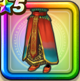

ラーミアの羽衣下
攻略班 7.0点 / 封印耐性+5%眠り耐性+5%バラモスへの耐性+20%ドラゴン系への耐性+5%イオ属性じゅもんダメージ+3%
くわしい特徴
【レベル別習得スキル】 Lv1封印耐性+5% Lv8眠り耐性+5% Lv10さいだいMP+5 Lv12バラモスへの耐性+20% Lv15ドラゴン系への耐性+5% Lv18イオ属性じゅもんダメージ+3% Lv23【賢者】さいだいHP+5 Lv25守備力+7 【限界突破スキル】 1凸防御減耐性+5% 2凸きようさ+7 3凸守備力+5 4凸さいだいHP+5